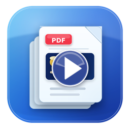
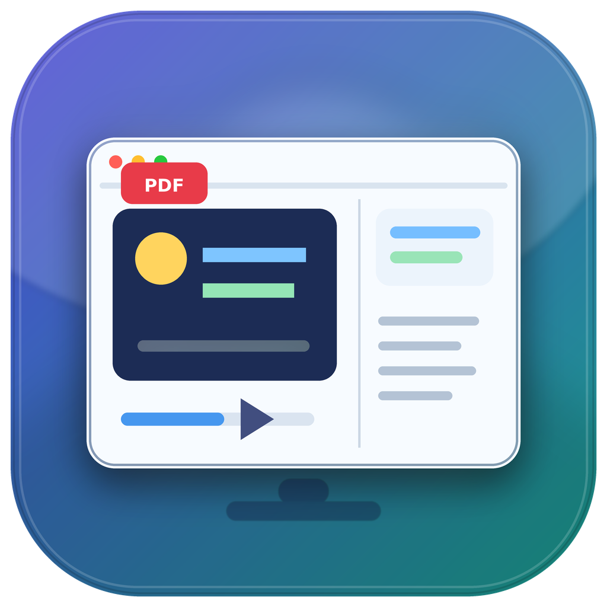
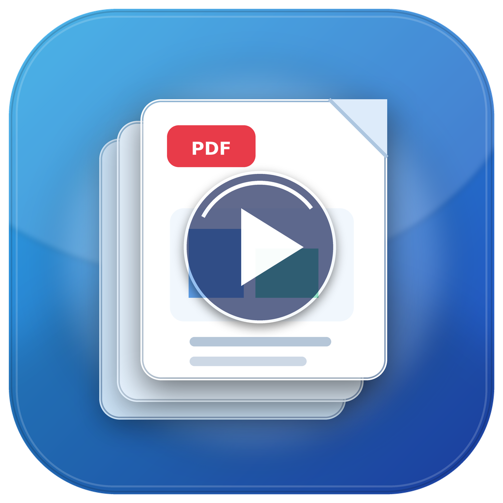
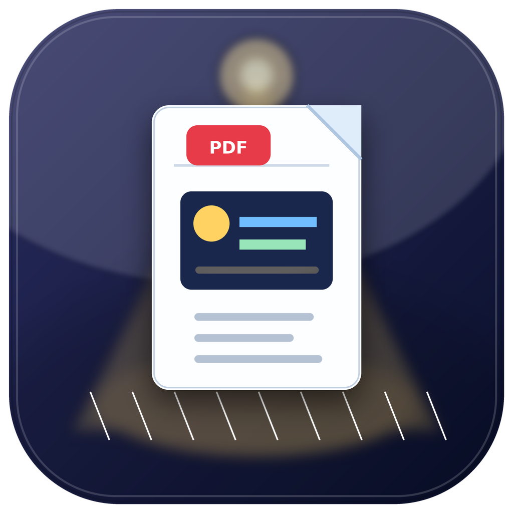

A fast, native macOS presenter view for plain PDF decks — second-screen output, live annotations, a talk-length countdown, and an iPhone / iPad remote.



Preview.app has no presenter view, Keynote and PowerPoint don't open PDFs nicely, and the dedicated tools are clunky or expensive. PDF Presenter is a small, fast, native app that does one thing well.
Current + next slide, notes, timer and clock on your laptop; the slide goes full-screen on the projector when you're ready.
Plain decks render with a real PDFView so clickable links and embedded media work on the audience screen.
Beamer "notes on second screen" splits, or a Markdown / text sidecar next to the PDF.
Laser, multi-colour pen, highlighter, eraser, spotlight and a magnifier — all live on the audience screen, and exportable to a flattened PDF.
Set a target; the timer turns amber, then red, as you run over.
Pick the presenter and audience screens, swap them, and start windowed — it never grabs your projector uninvited.
A companion app, PDF Presenter for iOS, that's both a wireless remote for the Mac and a standalone presenter for the device itself.
Current and next slide, notes, timer and slide counter in your hand.
Navigate, jump, blank, time, switch tools, layout and full-screen — your shortcuts as buttons.
Draw on the slide with pressure → width; it appears live on the audience screen. Plus a touch laser / spotlight.
Plug a display into the iPad, open a PDF, and present locally — the audience slide fills the external display, the presenter view stays in your hands.
Build & install the iOS app → (free Apple ID; no Developer Program required)
Press ? in the app for the full cheat-sheet.
| Key | Action |
|---|---|
| → ↓ Space · ← ↑ | Next / previous slide |
| 123 then ↩ | Jump to the slide numbered 123 (the PDF's own page labels) |
| Tab / G | Slide overview grid |
| L D H X S Z | Laser · pen · highlighter · eraser · spotlight · magnifier |
| B / W | Blank audience to black / white |
| F | Toggle audience full-screen |
| ⌃M | Move audience to the next display |
| P / R | Pause-resume / reset timer |
| ⌘E | Export annotated PDF |
The app isn't notarized (it's free and open source), so macOS Gatekeeper asks the first time.
PDFPresenter.app → Open, then confirm Open (only needed once).git clone https://github.com/smolix/pdfpresenter
cd pdfpresenter
./build.sh # assembles PDFPresenter.app
open PDFPresenter.app --args /path/to/slides.pdf